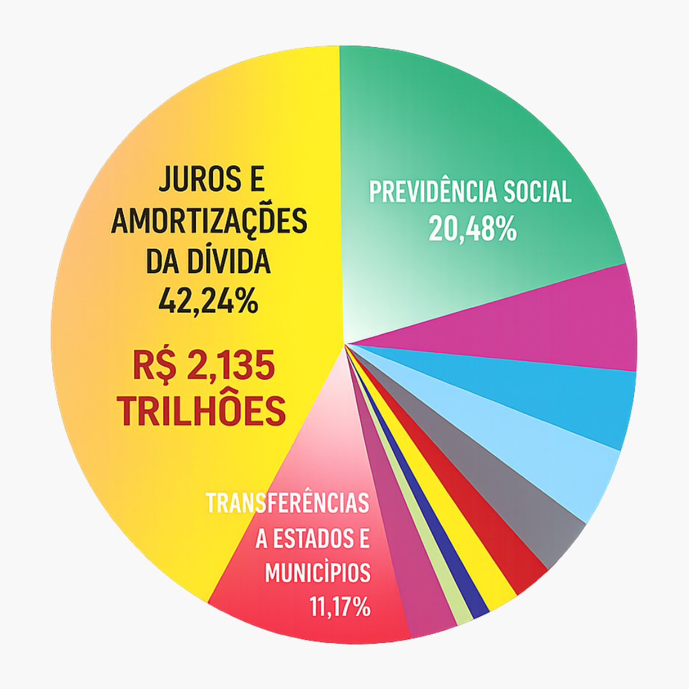

Existe um caminho.
Um caminho que faz o dinheiro sair da base
e ir parar no topo.
Esse caminho tem nome: dívida pública.
Antes de qualquer coisa:
a dívida, por si só, não é o problema.
Todo governo pega dinheiro emprestado.
Isso pode ser usado pra investir no país.
Até aí, tudo normal.
Agora, olha o ponto.
O governo pega dinheiro.
Em troca, entrega um título.
Esse título é uma promessa de pagamento.
E ele rende juros.
Quando vence, o governo paga com juros.
Até aqui, ainda está tudo dentro do esperado.
O problema começa depois.
O dinheiro novo não vai pra investimento…
e passa a ser usado pra pagar dívida antiga.
Ou seja:
entra dívida nova
pra pagar dívida velha.
E aí começa um ciclo.
Pega dinheiro novo
paga o antigo
assume outro compromisso
com mais juros
e repete.
A dívida não acaba.
Ela vai sendo empurrada pra frente.
Sempre com mais juros entrando no meio.
Agora pensa no efeito disso.
Cada vez mais dinheiro vai sendo direcionado pra esse pagamento.
E começa a faltar pra outras coisas.
saúde
educação
infraestrutura
É aí que o país começa a travar.
Não porque falta dinheiro.
Mas porque ele está indo pra outro lugar.
O fluxo fica assim:
o dinheiro sai da base
passa pelo governo
e sobe.
E não volta como deveria.
E quando você olha os números…
fica mais claro ainda.
Orçamento federal executado (pago) 2025

Fonte: Auditoria Cidadã da Dívida
Uma parte enorme de tudo que o país gasta
vai pra dívida.
Não é um detalhe.
É uma parte gigante.
Mais de 2 trilhões de reais.
Pra ter uma ideia:
se você contasse um número por segundo…
levaria mais de 67 mil anos.
É esse o tamanho do dinheiro em jogo.
E quem recebe isso?
Quem está comprando esses títulos.
bancos
fundos
grandes investidores
São eles que recebem os juros.
E quanto mais o ciclo gira,
mais dinheiro vai pra esse grupo.
E a auditoria?
Auditar não é dar calote.
É conferir.
Ver o que está sendo pago,
pra quem,
e como essa dívida foi construída.
Está prevista na Constituição.
Mas não acontece.
E sem isso, o ciclo continua.
O dinheiro continua sendo drenado.
E a falta continua sendo sentida.
Agora pensa comigo.
A base sustenta tudo.
Mas esse funcionamento não se organiza
em função dela.
Então não é só sobre entender isso.
É sobre começar a observar.
Quem está decidindo?
Essas decisões favorecem quem sustenta?
Ou não?
O que entra como prioridade?
E o que fica de fora?
Porque no fim…
as decisões são feitas por pessoas.
Pessoas que ocupam posições de poder.
E essas posições podem ser ocupadas.
Principalmente pelo voto.
Existe uma disputa.
Essa disputa define pra onde o dinheiro vai.
Pode ir pra base.
Ou pode continuar se concentrando no topo.
A escolha importa.